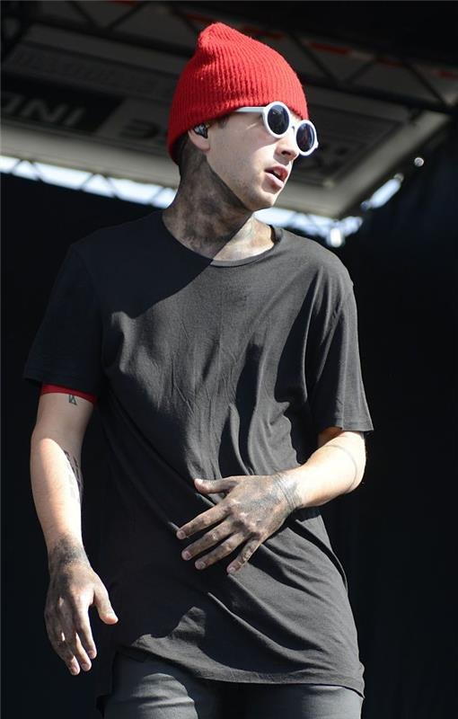

Twenty One Pilots é uma dupla formada em Columbus, Ohio, em 2009. Composta por Tyler Joseph (vocal, piano) e Josh Dun (bateria), a banda mistura estilos como indie pop, rap rock e electropop.
O nome é inspirado na peça All My Sons, de Arthur Miller, que fala sobre dilemas morais — tema comum nas letras da banda.

Vocal, Piano, Ukulele e Baixo. Fundador da banda e principal compositor. Nascido em 1 de dezembro de 1988, em Columbus, Ohio.
Bateria e Trompete. Entrou para a banda em 2011. Conhecido pelas performances energéticas no palco. Nascido em 18 de junho de 1988.